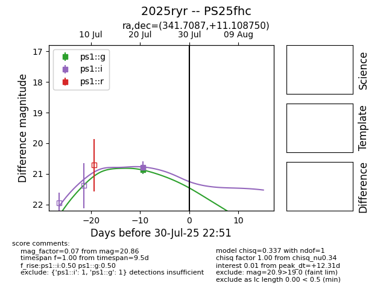

Target 2025ryr at 2025-07-30 22:51, see:
TNS: wis-tns.org/object/2025ryr
YSE: ziggy.ucolick.org/yse/transient_detail/2025ryr
alt names
2025ryr (yse,tns)
PS25fhc (panstarrs)
coordinates:
equatorial (ra, dec) = (341.7087,+11.10875)
galactic (l, b) = (80.4551,-41.26429)
photometry
last ps1::g=20.86, ps1::i=20.79
1 ps1::g, 1 ps1::i detections
